埼玉県春日部市・金属加工
鉄製品なら、
何でもご相談ください。
内田製作所は、埼玉県春日部市で架台・機械フレーム・プラント関連製品をつくっている工場です。板厚10mm・長さ4050mmまでのシャーリングから、半自動溶接機10台、2.8t天井クレーン6基まで。人の背丈を超える鉄の構造物を、切断から溶接・組立まで自社で仕上げます。
短納期もご相談ください。工程を外に出さないぶん、日数を詰められます。
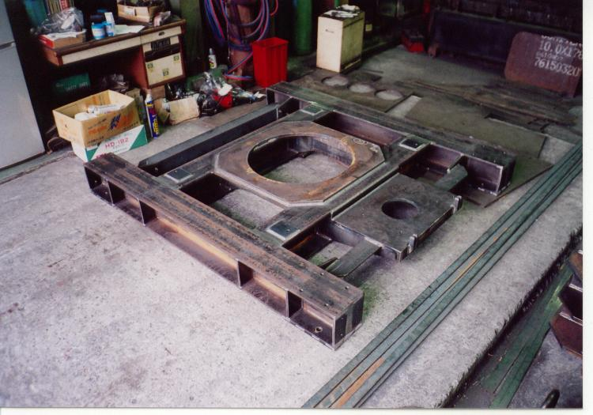
つくるもの
機械を載せる、
土台をつくっています。
目立つ製品ではありません。工場のなかで機械の下に敷かれ、そのまま何十年も動かないものです。だからこそ、狂わないことがすべてです。
架台
機械や設備を据えるための台。荷重と振動を受け止め、水平を保ちます。
機械フレーム及び関連製品
装置の骨格そのもの。角パイプと鋼板を組み、溶接ひずみを抑えて仕上げます。
プラント関連製品
設備まわりの構造物。現場合わせの寸法にも対応します。
鉄製品全般
上の3つに当てはまらないものも承ります。まずは形をお見せください。
製作事例
実物を、そのまま。
工場で撮った写真です。塗装前の黒皮のまま、白く塗り上げたもの、下地を塗ったもの。工程の途中もそのまま載せています。
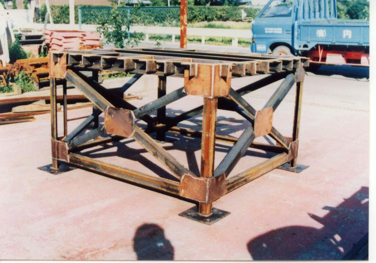
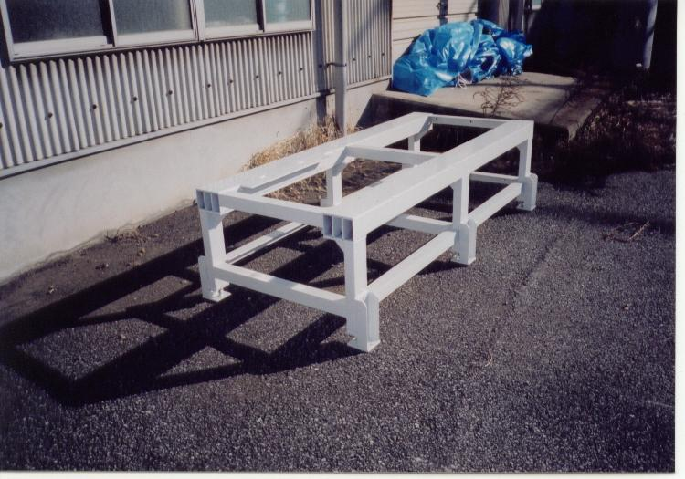
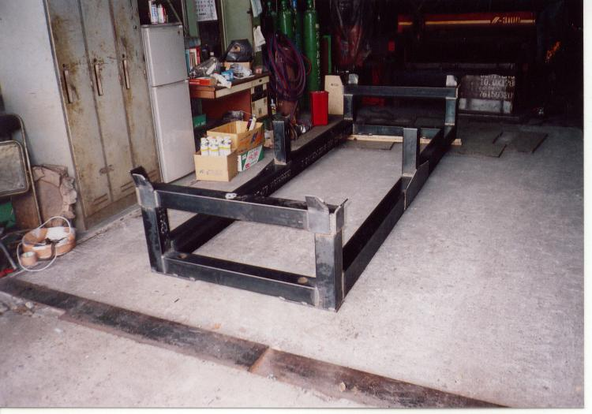
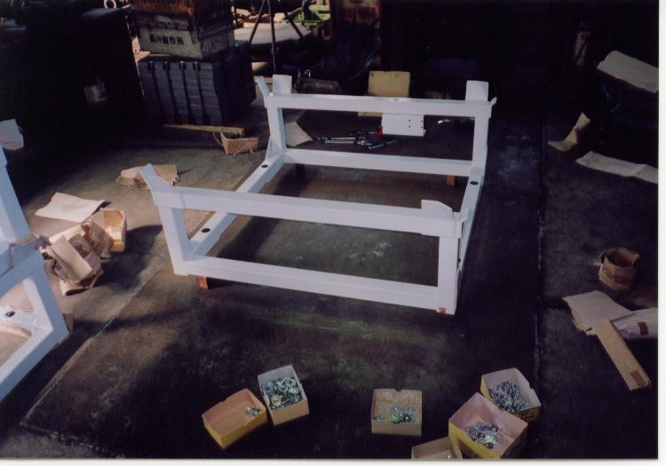
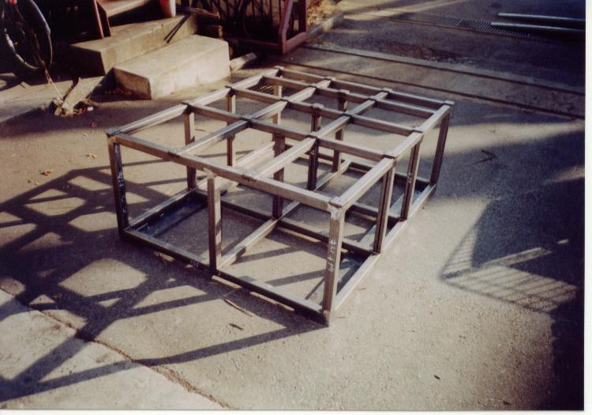
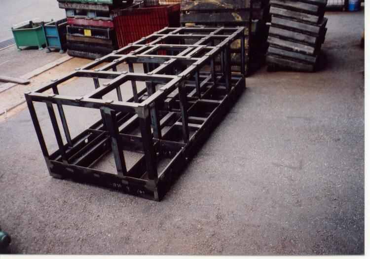
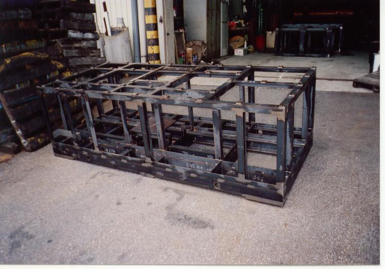
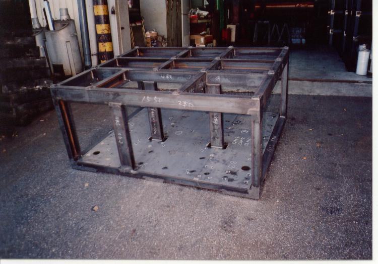
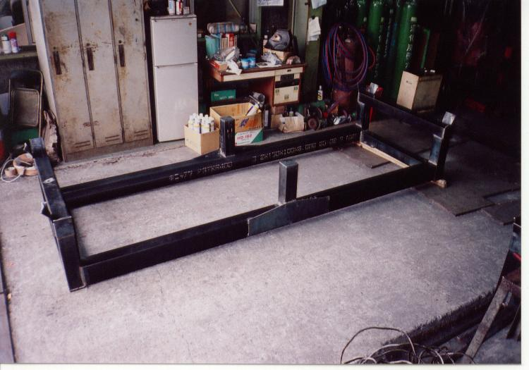
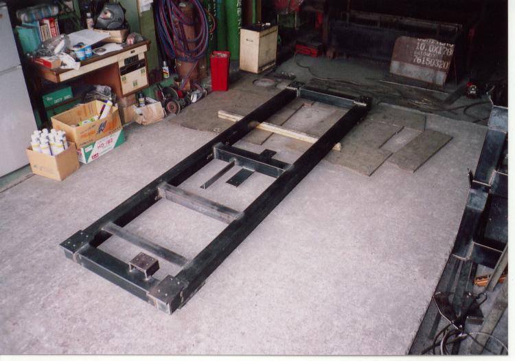
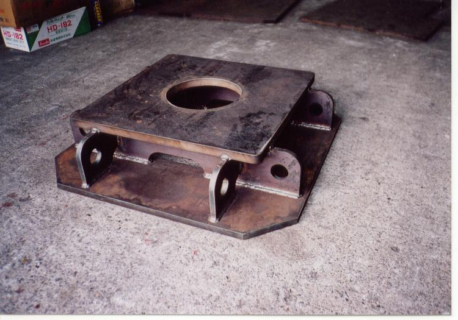
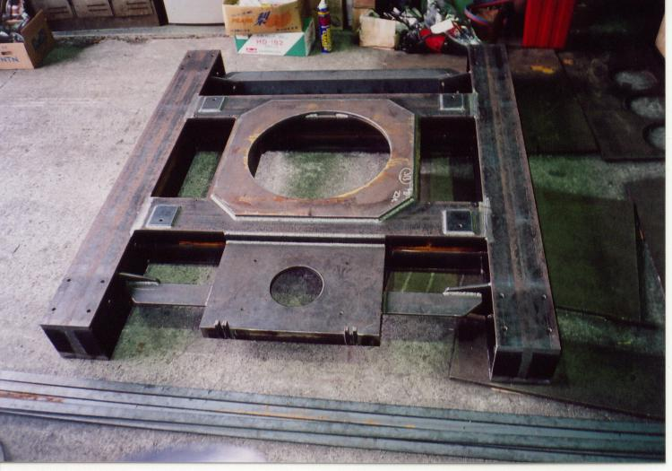
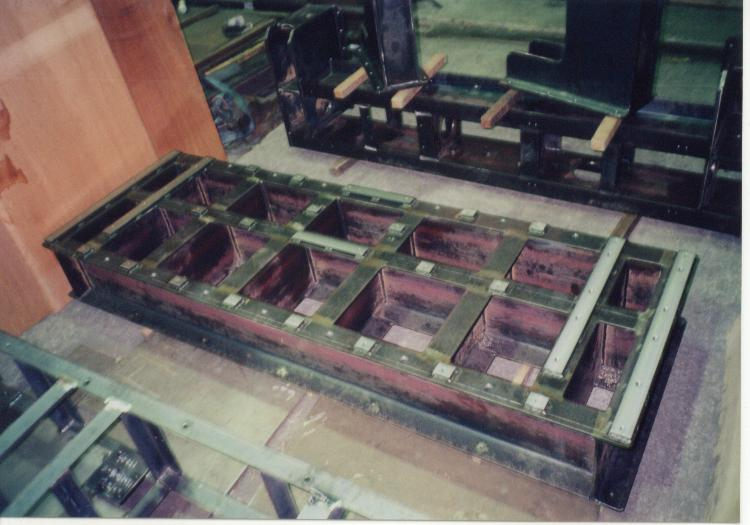
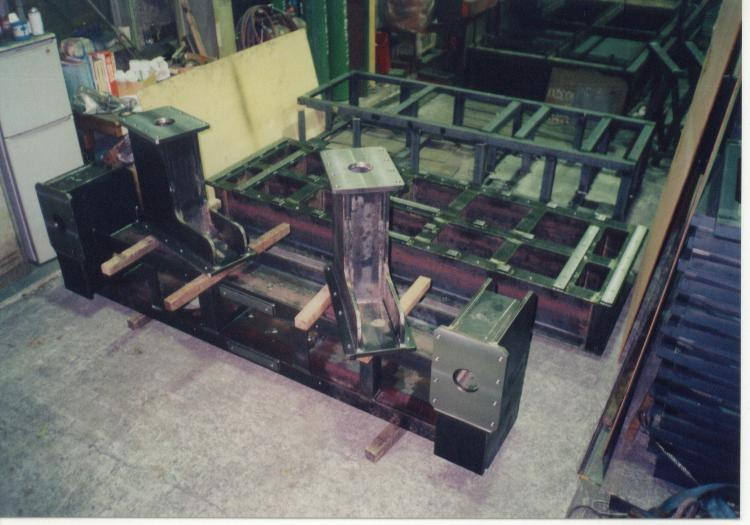
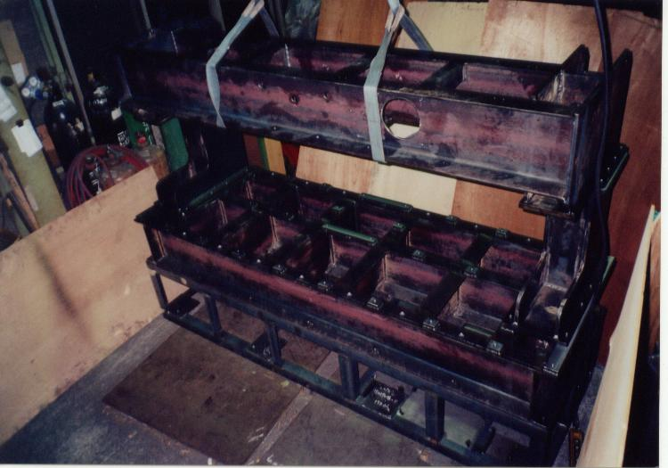
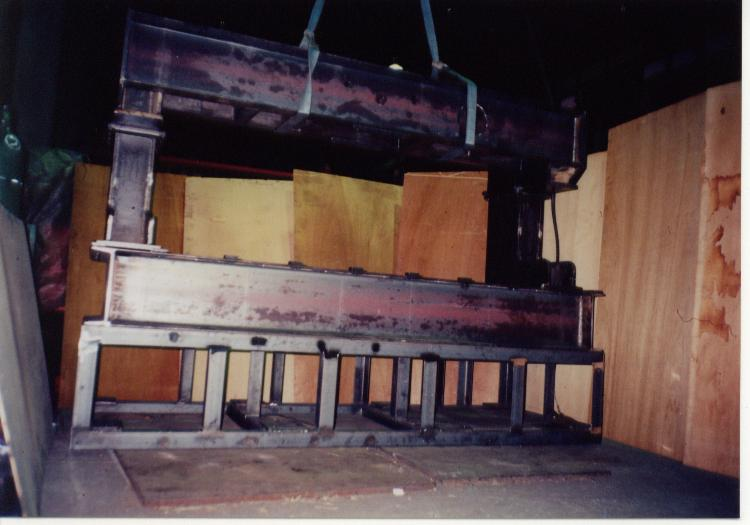
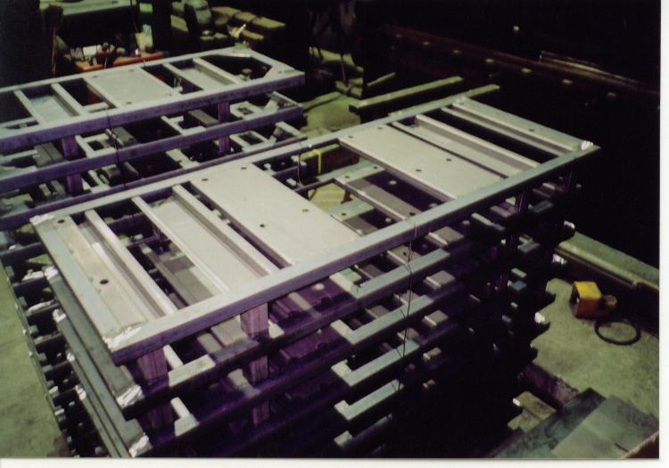
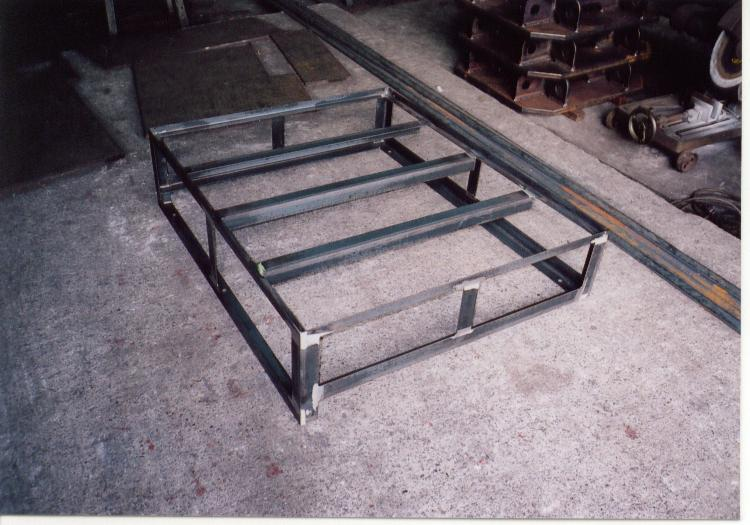
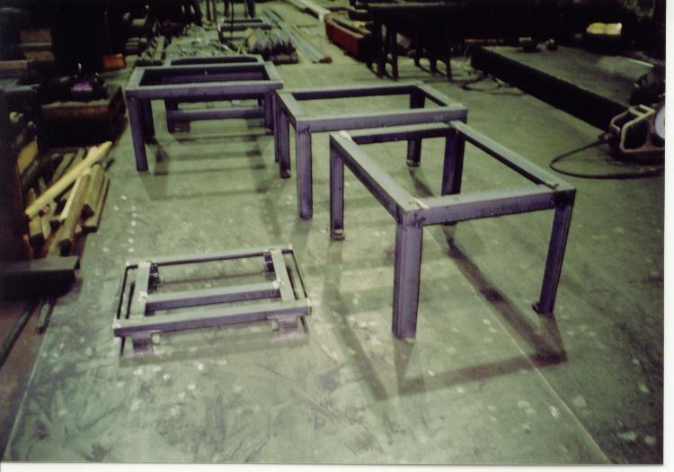
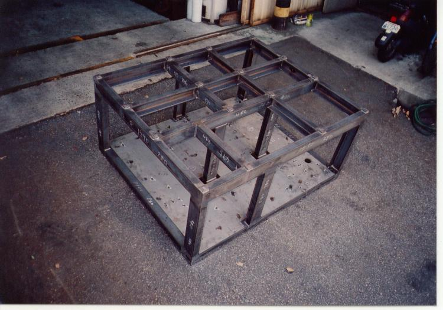
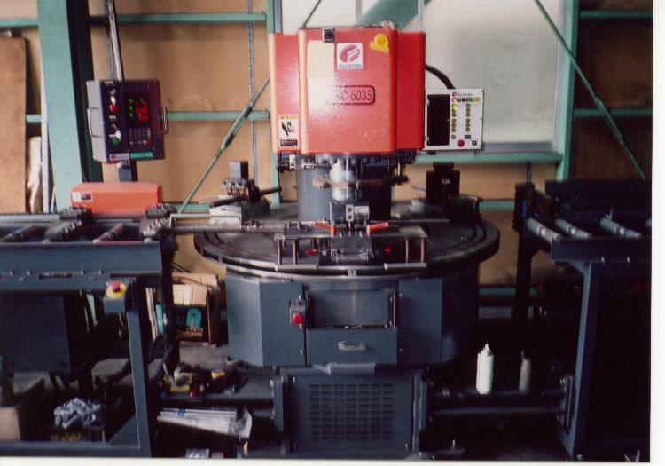
主要設備
切る、曲げる、
溶ける、吊る。
大物を扱うのに要るのは、大きな機械と、それを動かすクレーンです。溶接機は種類と台数を揃え、同時に何台も走らせられるようにしてあります。
| 設備名称 | 数量 | 備考 |
|---|---|---|
| シャー | 1 | 10mm × 4050mm（鉄） |
| シャー | 1 | 6mm × 2000mm（鉄） |
| ロータリープレス（60t） | 1 | — |
| 電気溶接機 | 4 | — |
| 半自動溶接機 | 10 | — |
| TIG溶接機 | 3 | — |
| プラズマ切断機 | 2 | — |
| 天井クレーン（2.8t） | 6 | — |
| 万能機（50t） | 1 | — |
| プレス機（60t） | 1 | — |
| プレス機（35t） | 1 | — |
| プレス機（15t） | 1 | — |
| プレス機（10t） | 1 | — |
| ターンテーブル | 3 | — |
| フォークリフト | 1 | — |
| 中型トラック（4.4t） | 1 | 自社配送 |
- 10mmシャーリング最大板厚
- 4050mmシャーリング最大切断長
- 17台溶接機の合計
- 2.8t × 6基天井クレーン
選ばれる理由
工程を、外に出しません。
- 01
切断から組立まで一貫
シャーリング、プレス、プラズマ切断、溶接、組立。すべて春日部の自社工場で行います。工程間の受け渡し待ちがないぶん、日数が読めます。
- 02
大物を扱える
2.8t天井クレーン6基とターンテーブル3台。重い母材を安全に回して、どの面からも溶接できます。大きさで断ることはほとんどありません。
- 03
短納期に対応
溶接機17台を同時に走らせられる体制です。急ぎの案件はまずご相談ください。
- 04
自社便で届けます
4.4t中型トラックを保有。積み下ろしのしにくい形状のものも、こちらで運びます。
よくあるご質問
はじめての方へ
どのくらいの大きさまで作れますか。
シャーリングは板厚10mm・切断長4050mmまで対応します。2.8t天井クレーンを6基備えているため、人力では動かせない大きさの架台やフレームも工場内で製作できます。搬入経路の都合がある場合は、分割して現場で組む方法もご提案します。
短納期でもお願いできますか。
ご相談ください。切断・プレス・溶接・組立を自社工場で行っているため、外注を挟む場合より工程を詰められます。ご希望の期日を最初にお伝えいただけると、可否をすぐお答えできます。
図面がないのですが相談できますか。
鉄製品なら何でもご相談ください。現物やポンチ絵、寸法のメモからでもお話をうかがいます。まずは工場（048-737-0510）へお電話ください。
ステンレスやアルミも扱えますか。
TIG溶接機を3台備えています。材質と板厚をお知らせいただければ、可否をお答えします。
納品はどうなりますか。
4.4tの中型トラックを保有しており、自社便でお届けできます。サイズや距離によっては運送会社を手配します。
会社概要
株式会社 内田製作所
- 会社名
- 株式会社 内田製作所
- 役員
- 取締役会長 内田 阿久蔵
代表取締役 内田 久史 - 事業内容
- 金属加工業（架台、機械フレーム及び関連製品、プラント関連製品製作／鉄製品全般）
- 本社
- 〒330-0843 埼玉県さいたま市大宮区吉敷町4-86
Tel. 048-642-0729 - 工場
- 〒344-0014 埼玉県春日部市豊野町2-30-6
Tel. 048-737-0510 ／ Fax. 048-737-4495
拠点・アクセス
本社と工場、
ふたつあります。
製作のご相談は工場へ直接おかけいただくのがいちばん早いです。
工場製作のご相談はこちら
〒344-0014 埼玉県春日部市豊野町2-30-6
Fax. 048-737-4495 ／ 東武伊勢崎線 武里駅から 2.4km
本社
〒330-0843 埼玉県さいたま市大宮区吉敷町4-86
JR大宮駅 東口方面
まず、工場にお電話ください。
図面がなくてもかまいません。「こういう機械を載せたい」「この寸法に収めたい」からお話をうかがいます。